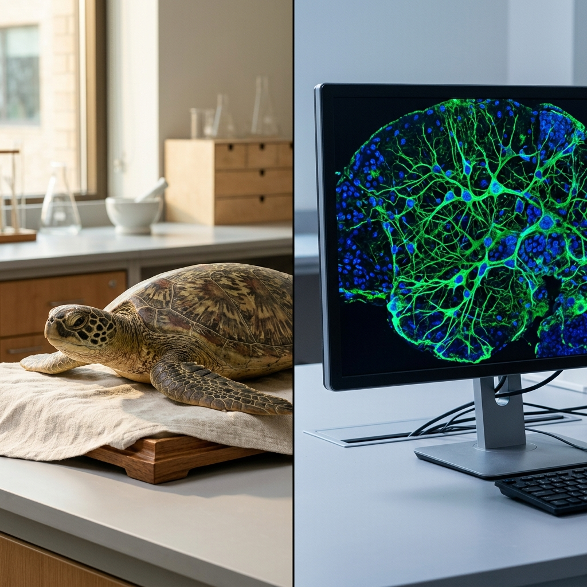
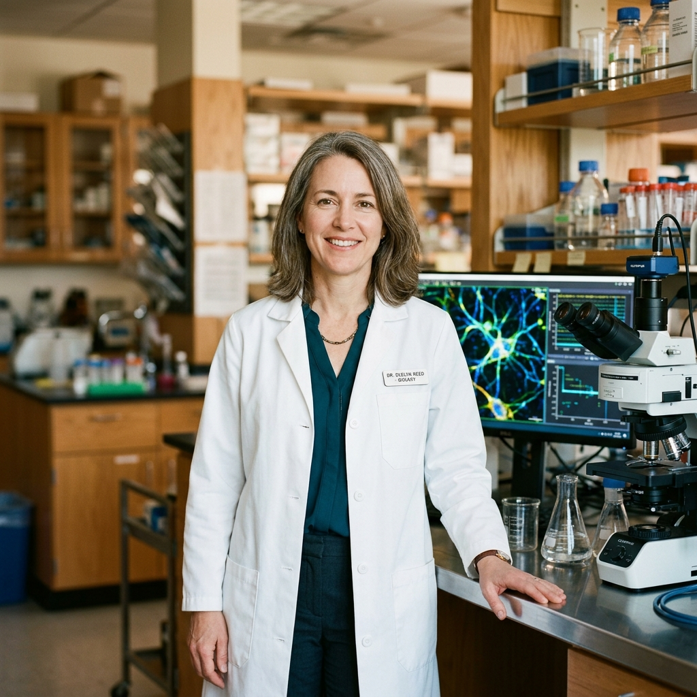
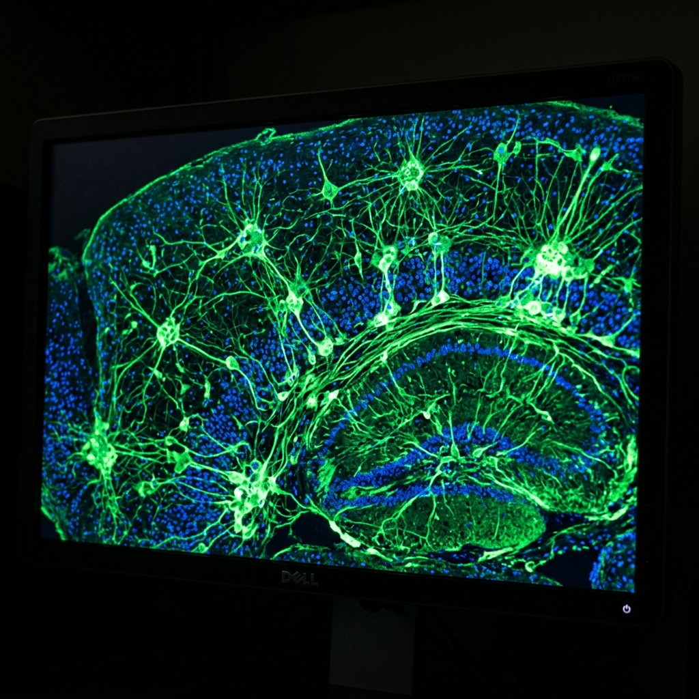

Project Context
§ 01The Challenge / Hypothesis
Oxytocin is widely known as the "bonding hormone" — the neurochemical of trust, love, and attachment in adults. But when does the oxytocin system first begin to shape the brain? Caldwell's work starts with a question most researchers never asked: what is oxytocin doing before birth?
The Solution / Innovation
Caldwell is the first researcher to systematically study oxytocin's role in prenatal brain development — specifically how oxytocin exposure in the womb shapes the developing neural architecture. Her findings have implications for understanding autism spectrum disorder, early attachment disorders, and the biological origins of social behavior. Her origin story is also the hook: she started with sea turtles. The same hormone that bonds a mother to her child was first studied in a reptile on a beach.
Scientific Workflow
§ 02Animal Model Work
Early research using turtle embryos as a model system. The unexpected starting point of a story about human bonding.
Brain Tissue Preparation
Prenatal brain tissue sections prepared and stained for microscopy. This is where oxytocin receptor distribution becomes visible.
Fluorescence Microscopy
Stained sections visualized under confocal or fluorescence microscope — the oxytocin receptor distribution appears as patterns of light in the developing brain architecture.
Behavioral and Developmental Correlation
Data connected to behavioral outcomes and developmental markers — the bridge between neurochemistry and the human story.
---
Shot Concepts
§ 03Caldwell at the confocal microscope in a darkened room, her face lit only by the monitor showing fluorescence neural imagery — glowing receptor distribution patterns in the developing brain. This is a researcher illuminated by her own discovery. Same conceptual energy as the biofilm Concept A, adapted for neuroscience.
- Full dark. Monitor is the only light source.
- Position her so the screen glow spills onto her face and lab coat
- Choose a microscopy frame with strong color separation — greens and blues ideal
- Side profile or 3/4 — show both face and screen in the same frame
- This is the one image that connects the scientist and the science without needing any other explanation
Technical Notes
Setup Diagram
[confocal microscope]
[monitor: neural imagery]
green/blue glow on face
[Caldwell]
3/4 profile
camera (side angle) 85mm

AI Visualization Prompt
A sea turtle — or a turtle specimen, image, or symbolic representation — alongside a brain tissue slide or neural imagery. The collision of two worlds: a beach, a reptile, a discovery about human bonding. Can be a conceptual still life or a diptych composition.
- Can be literal (turtle specimen + brain imagery on a monitor) or abstract
- A printed fluorescence image alongside a turtle photograph works if live animals aren't accessible
- Keep the composition clean — two elements, strong light separation
- This is the "origin story" image — it should feel slightly unexpected
Technical Notes
Setup Diagram
directional light
|
[turtle element] [brain/neural imagery]
camera, slight angle, 50mm

AI Visualization Prompt
Clean, warm editorial portrait. Caldwell in her lab, direct eye contact, confident and present. The science environment fills the background — microscopes, equipment, printed imagery on a monitor. This is the portrait editors reach for when they need a scientist who doesn't look like a stock photo scientist.
- Warm key light, large modifier — this is a warm story about connection
- Position her slightly off-center with the lab filling the frame
- She does not need to be holding anything — the environment carries the context
- Vertical orientation for print; horizontal for web
- This is the "feature portrait" — magazine cover energy
Technical Notes
Setup Diagram
softbox warm
(camera-left)
[lab: microscopes, equipment]
[Caldwell]
direct eye contact
camera, 85mm

AI Visualization Prompt
An extreme close-up of a fluorescence microscopy image on a monitor or printed large — oxytocin receptor distribution in the developing brain rendered as a landscape of glowing nodes and pathways. No human subject. Pure science visualization as visual art. The image that stops a reader mid-scroll.
- Frame only the monitor — exclude bezel and surroundings
- Request the most visually striking frame from Caldwell's microscopy data
- Shoot at a slight angle to eliminate screen reflections
- This image needs no caption to communicate beauty and complexity
- Pairs as a section-break or closing image in editorial layout
Technical Notes
Setup Diagram
[monitor: neural fluorescence image]
vivid green/blue pathways
camera, slight angle, 50mm
